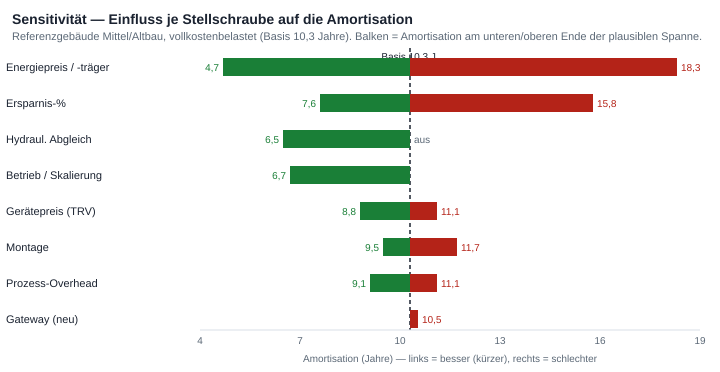

LoRaWAN-basierte Heizungssteuerung für ganze Gebäude — Make-vs-Buy, Prozesskette & dynamisches Kalkulationsmodell
Frage: Lohnt sich LoRaWAN-Heizungssteuerung für ein gegebenes Gebäude — und was darf sie kosten?
Antwort: Es kommt auf Bauart, Energieträger und Skalierung an. Im schlecht gedämmten Bestand (Altbau, Plattenbau) amortisiert sich die Maßnahme; im Neubau nicht. Entscheidend ist jedoch die Kostentiefe: Die nackte Hardware-Rechnung (Referenzgebäude ~4,6 Jahre) wird vollkostenbelastet — inklusive Prozesskette und laufendem Betrieb — zu ~10 Jahren. Der Energieträger (Fernwärme statt Gas) und der Betrieb über mehrere Gebäude holen sie auf ~6–7 Jahre zurück.
Make vs. Buy: Fertigsysteme (z. B. Homematic IP) sind beim reinen Hardware-CAPEX günstiger; der Eigenbau (Make) auf offenem LoRaWAN gewinnt über Offenheit, API/BMS-Anbindung, Skalierung jenseits der Hub-Limits, Forschungsdaten und kein Lock-in — und nutzt das an der WHZ bereits vorhandene Gateway (Grenzkosten 0).
Das whz-lora-Gateway ist nicht Selbstzweck, sondern das Messinstrument dieser Studie: Für ein gegebenes Gebäude soll bestimmt werden, ob LoRaWAN-Heizungssteuerung wirtschaftlich ist (ja/nein) und innerhalb welcher Kostenhülle sie es bleibt.
Die Antwort ist ein dynamisches Modell, das rückwärts rechnet: Aus dem erreichbaren Nutzen (Energieersparnis) folgt die maximal zulässige Systemkosten für Amortisation innerhalb des Horizonts — passt die reale Hardware + Installation darunter, ist es wirtschaftlich. Das Modell ist pro Heizkörper formuliert (Nutzen und Kosten skalieren beide ~linear mit der Gebäudegröße, die sich im Ja/Nein herauskürzt) und wird über 3–4 Bau-Archetypen parametrisiert. Reale RSSI/SNR-Messungen aus dem whz-lora-Testbed kalibrieren die Funk-Seite.
Zwei Ausgaben hängen an unterschiedlichen Parametern: die Gateway-Auslegung (Funk/Abdeckung) und das Wirtschaftlichkeits-Urteil (Kosten vs. Nutzen).
| Eingabe (Operator) | Rolle |
|---|---|
| Archetyp (Bauart/Alter) | setzt Heizintensität, Ersparnis-Band, Funk-Klasse |
| Aktuator-Anzahl, Geschosse, Fläche | absolute € und Gateway-Zahl |
| Energiepreis, Horizont, Abgleich-Flag | treiben das Pro-Heizkörper-Urteil |
Gleichungen: Nutzen = Intensität × Fläche × Ersparnis × Energiepreis; Make-CAPEX = Heizkörper × (Gerät + Montage) + Gateway; Amortisation = CAPEX ÷ Nutzen/Jahr; wirtschaftlich ⇔ Amortisation ≤ Horizont. Details: ADR-0021, model.md.
| Preset | Heizintensität | Ersparnis (HK / +Abgleich) | Funk-Klasse |
|---|---|---|---|
| Neubau (GEG/EH-55) | 70 kWh/m²·a | 4 % / 8 % | schwierig (Low-E) |
| Saniert | 90 | 6 % / 12 % | moderat |
| Altbau (Ziegel, <1949) | 160 | 10 % / 18 % | mild |
| Plattenbau / Stahlbeton | 140 | 12 % / 21 % | stark |
Quellen: IWU TABULA, Destatis/Zensus 2022, ista/TU Dortmund (n=74k), Heizspiegel. Ersparnis-Bänder aus Energiespar-Literatur (s. §7). Größen-Defaults: Klein/Mehrfamilienhaus 35 HK, Mittel/Wohnkomplex 120 HK, Groß/Bürokomplex 92 HK.
| Eingabe | Default | Spanne | Konfidenz · Quelle |
|---|---|---|---|
| LoRaWAN-Aktuator (Mengenpreis) | 70 € | 50–82 | mittel · m2mgermany/Concept13 |
| Montage / Aktuator | 40 € | 30–60 | mittel · enpal/SHK |
| Hydraulischer Abgleich / HK | 75 € | 50–120 | hoch · co2online/Finanztip |
| Energiepreis Gas | 0,12 €/kWh | 0,09–0,13 | hoch · Destatis/BDEW |
| Energiepreis Fernwärme | 0,16 €/kWh | 0,08–0,20 | hoch · vzbv/DIW |
| Gateway (0 € bei Wiederverwendung) | 200 € | 140–230 | hoch · Retail Kerlink/RAK |
Kosten/Heizkörper bleiben ~110 € — der günstigere Mengenpreis hebt die höhere Montage auf. Annahme bleibt: Mengenpreis (login-gated, −10–15 % geschätzt), Montage als Batch-Wert, Fernwärme = lokaler Monopolpreis (Faktor 2). Ein echtes WHZ-Angebot härtet diese drei.
Damit die Kalkulation realistisch wird, bilden wir die Lieferung als Prozesskette eines kleinen technischen Betriebs ab — von der Anfrage bis zum laufenden Betrieb — und verteilen die Kosten auf die Schritte (Activity-Based Costing). Referenzgebäude: Mittel/Altbau, 120 Heizkörper, 6 Geschosse, 1.500 m², Gas, vorhandenes Gateway.
| Summen (Referenzgebäude) | € | Anmerkung |
|---|---|---|
| Kernkosten (Gerät + Montage) | 13.200 | 120 × 110 € — das, was der Rechner zeigt |
| Prozess-Overhead (Planung, Begehung, PM, Abnahme) | 3.640 | im nackten Hardware-Blick unsichtbar |
| Vollkosten-CAPEX | 16.840 | realistische „virtuelles Unternehmen"-Sicht |
| OPEX laufend | 1.238/a | Batterie 228 + Monitoring 960 + Hosting 50 |
| optional: Hydraulischer Abgleich | 9.000 | 120 × 75 € — separater Fachbetrieb, Co-Maßnahme |
| Punkt | Schritt | Rechnung |
|---|---|---|
| Gateway-Auslegung | 3 | gwCount = ⌈Geschosse / (4–5)⌉, RF-abhängig |
| Geräte-/Aktorzahl | 3 | ≈ Einheiten × 5 bzw. Fläche / 20 m²; vor Ort gezählt |
| Wirtschaftliche Rückrechnung | 3 | Nutzen = I × A × s × Preis; Payback = CAPEX / Nutzen |
| Make-vs-Buy | 3 | Buy = HK × 50 € + ⌈HK/250⌉ × 180 €; günstigere Variante |
| Ist-Payback & Kalibrierung | 7 | Ist-CAPEX / Nutzen; RSSI/SNR → Sizing-Parameter |
| Wartungs-/Batteriezyklus | 8 | OPEX/Jahr; nächste Wechselwelle = Einbau + Intervall |
Der nackte Hardware-Blick schmeichelt. Erst die Vollkosten (Prozesskette) und der laufende Betrieb (OPEX) zeigen das ehrliche Bild für das Referenzgebäude (Mittel/Altbau, Gas, ohne Abgleich):
| Sicht | CAPEX | OPEX/a | Netto-Nutzen/a | Amortisation |
|---|---|---|---|---|
| Kern (Gerät + Montage) | 13.200 | — | 2.880 | 4,6 J. |
| Vollkosten-CAPEX (mit Prozess) | 16.840 | — | 2.880 | 5,8 J. |
| Vollkosten + Betrieb | 16.840 | 1.238 | 1.642 | 10,3 J. |
| … mit Fernwärme (0,16 €/kWh) | 16.840 | 1.238 | 2.602 | 6,5 J. |
| … bei Skalierung (Monitoring/10 Gebäude) | 16.840 | ~378 | 2.502 | 6,7 J. |
Der ~10,3-Jahre-Wert ist ein irreführender Punktwert. Die Amortisation ist eine Bandbreite; diese Stellschrauben bewegen sie (Balken = Spanne, grün = besser/kürzer, rot = schlechter):

| # | Stellschraube | Einfluss auf Payback | Maßnahme / Hebel |
|---|---|---|---|
| 1 | Einsparquote (10 %, 5–12 %) | dominant: 10→5 % ≈ 83 J.; 10→15 % ≈ 5,5 J. | Band-Mitte ~9 %, Rebound-Abschlag, am Testbed kalibrieren |
| 2 | Monitoring (OPEX) (960 €/a) | größte kontrollierbare: →~7,1 J. (Portfolio ~6,5) | event-getrieben statt Routine; Portfolio-Fixkosten |
| 3 | Stundensatz (80 €/h Verkauf) | Multiplikator: 80→50 €/h ≈ 7–8 J. | Urteil zum WHZ-Kostensatz (45–65 €/h) |
| 4 | Energieträger (Gas 0,12) | Fernwärme 0,16 = +33 % ≈ 6,5 J. | realen Gebäude-Tarif nutzen |
| 5 | Survey / Zweit-Gateway | −520 € + verstecktes 6-Geschoss-Risiko | Installateur-Tag weg; GW-Kontingenz im Angebot |
| 6 | Hydraul. Abgleich (9.000 €) | verdoppelt Ersparnis → ~5,7 J. (FW ~4,0) | eigene Co-Maßnahme mit eigenem Payback |
| 7 | Aktor-Mengenpreis (70 €) | weichste CAPEX-Zahl: −15 % → ~4,1 J. | echtes 120-Stück-Angebot (dnt & MClimate) |
| Szenario | Amortisation |
|---|---|
| Gebucht (loaded+ops · Gas · 10 % · Einzelgebäude) | ~10,3 J. |
| Bereinigt (Kostensatz + Monitoring event-getrieben) | ~7–8 J. |
| … mit Fernwärme (0,16 €/kWh) | ~6,5 J. |
| … mit hydraulischem Abgleich (Fernwärme) | ~4,0 J. |
| Pessimistisch (Gas · 5 % Ersparnis · Einzelgebäude) | >>20 J. |
Vollständig: Report A — Prozesskette (PDF) · Report B — Kostenanalyse (PDF).
868-MHz-Indoor-Ausbreitung ist gut vermessen: Pfadverlust-Exponent n ≈ 2–4, ~10 dB pro Stahlbetondecke, 15–20 dB pro Stahlbetonwand, Ziegel 10–15 dB. Empirisch deckt ein Gateway grob ~5 Etagen / ~30 m in schwerem Mehrgeschossbau ab; ein einzelnes zentrales Gateway versorgte ein 4-Geschosser durchgängig. EU868-Grenze: 14 dBm ERP, Duty-Cycle 1 %. Es gibt keine Indoor-16-Kanal-Gateways in dieser Preisklasse — Verdichtung heißt mehr 8-Kanal-Gateways.
Quellen: arXiv 2510.04346 (Indoor-Pfadverlust), ScienceDirect DISN 2022 (390 Knoten, 4 Gateways, 8 Etagen → ~1 Gateway/5 Etagen), NIST IR 6055, ITU-R P.1238. Lücke: per-Etage-Dämpfung bei 868 MHz für Stahlbeton ist aus 900 MHz extrapoliert — genau das misst whz-lora real (Phase-4-Kalibrierung).
Gemessene Ersparnisse streuen 3,5–21 %: ehrlicher kontrollierter Benchmark 3,5 % (Zonung auf bereits programmierten Systemen), ~10 % Thermostate allein, ~20 % erst mit hydraulischem Abgleich (verdoppelt). Deutsche Break-even-Schwelle: nur 5,7–7,7 % — der Fall ist plausibel, nicht garantiert. Herstellerangaben (22–31 %) beruhen auf überhöhten Baselines.
Quellen: Schäuble et al. 2020 (Break-even, peer-reviewed), Szczotka (Abgleich verdoppelt), Sunikka-Blank 2021 (RCT 3,5 %), KIT 2023 (15,5 %). Lücke: Institutionelle Gebäude sind in der Literatur quasi unvermessen (BBSR warnt) — zugleich der Forschungsbeitrag, den whz-lora leisten kann.
| Kriterium | Make (offenes LoRaWAN) | Buy (Homematic IP CCU3) |
|---|---|---|
| Hardware-CAPEX (120 HK) | 13.200 € | 6.180 € |
| Protokoll | offen, LoRaWAN EU868 | proprietär (BidCos), kein LoRaWAN |
| Skalierung | gebäudeweit, kein Geräte-Limit | ≤ 250 Geräte/Zentrale; Inseln |
| API / BMS / Forschungsdaten | REST/gRPC, MQTT, Datenpipeline | keine / app-zentriert |
| Lock-in / Cloud | keiner; selbst gehostet | Vendor; Abo-/Cloud-Risiko |
| WHZ-Vorteil | Gateway + LNS vorhanden (0 €) | separates System nötig |
Buy ist beim reinen CAPEX billiger; Make gewinnt über Offenheit, Skalierung, Daten und kein Lock-in. Für ein Forschungsgebäude mit vorhandener LoRaWAN-Infrastruktur ist „LoRaWAN-TRVs + selbst gehosteter LNS" architektonisch überlegen — die Mehrkosten pro Ventil sind die offene, skalierbare Plattform wert. Quellen: RQ7-Benchmark; MClimate Vicki ChirpStack-Codec.
| Gebäude | HK | CAPEX | Nutzen/a | Amortisation | Urteil |
|---|---|---|---|---|---|
| Klein / Neubau | 35 | 3.850 € | 168 € | 22,9 J. | ✗ |
| Klein / Altbau | 35 | 3.850 € | 960 € | 4,0 J. | ✓ |
| Mittel / Altbau | 120 | 13.200 € | 2.880 € | 4,6 J. | ✓ |
| Mittel / Altbau · Fernwärme | 120 | 13.200 € | 3.840 € | 3,4 J. | ✓ |
| Groß / Plattenbau | 92 | 10.120 € | 3.629 € | 2,8 J. | ✓ |
Kern-Payback (Gerät+Montage). Vollkosten + Betrieb verschieben die ✓-Fälle um mehrere Jahre nach hinten (s. §5). Neubau bleibt in jeder Sicht unwirtschaftlich.
LoRaWAN-Heizungssteuerung lohnt sich selektiv — im schlecht gedämmten Bestand und bei Fernwärme, nicht im Neubau, und nur, wenn die Vollkosten inklusive Betrieb ehrlich angesetzt und über ein Portfolio skaliert werden. Die Hardware ist nicht der Engpass; Prozess-Overhead, laufendes Monitoring und der Energieträger entscheiden.
Empfehlung: (1) ein reales Angebot für ein konkretes WHZ-Altbau-Gebäude einholen, um die drei weichen Kostengrößen zu härten; (2) das vorhandene Gateway als Grenzkosten-0-Vorteil nutzen; (3) die Funk-Dämpfung am Testbed messen und das Sizing kalibrieren; (4) Wirtschaftlichkeit stets als Portfolio, nicht als Einzelgebäude denken.